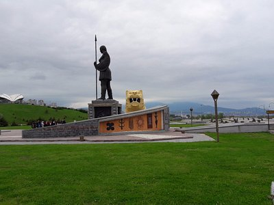
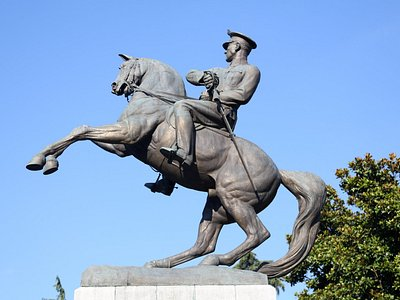
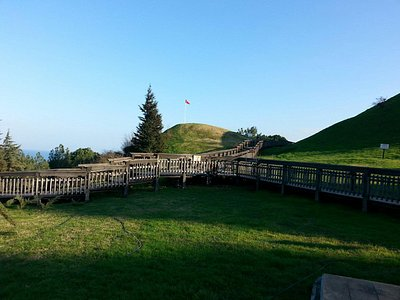
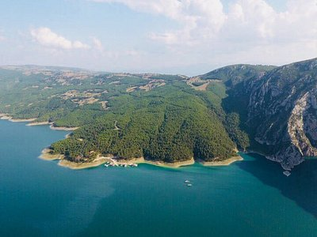

Samsun, Samsun ilinin merkezi olan şehirdir. Karadeniz Bölgesi'ndeki Orta Karadeniz Bölümü'nde, Türkiye coğrafyasının en kuzeyinde merkezî bir noktada yer alır. Karadeniz Bölgesi'nin eğitim, sağlık, sanayi, ticaret, ulaşım ve ekonomi açılarından en gelişmiş şehri olan Samsun kalkınmada birinci derecede öncelikli yörelerden biridir.
Yerleşim geçmişi MÖ 60.000 yılına dek uzanan Samsun'da varlığı bilinen en eski halk MÖ 12. yüzyıla kadar burada bulunan Kaşkalardır. Kaşkaların ardından Hitit dönemini yaşayan şehir, MÖ 1182 ile MÖ 546 yılları arasında birkaç kez el değiştirmiş ve devamında Pers hâkimiyetine girmiştir. Perslerin ardından Makedonya, Pontus, Roma, Bizans egemenliği gören Samsun, bunların ardından bir Ceneviz kolonisi hâline gelmiştir. Bu dönemde Dânişmendliler Beyliği tarafından kuşatılan şehir alınamamış ve şehrin hemen yanına "Müslüman Samsun" adıyla bilinen yeni bir şehir kurulmuştur. I. Mehmed dönemine dek iki Samsun şehri de varlığını sürdürmüş, bu dönemde her iki şehir de Osmanlı Devleti topraklarına katılarak birleştirilmiştir. 1422-1428 yılları arasında Kubadoğulları eline geçen Samsun, 1923 yılında Türkiye Cumhuriyeti'nin ilânına dek Osmanlı hakimiyetinde kalmıştır. Türkiye'nin kurulmasına dek uzanan 19 Mayıs 1919'da Mustafa Kemal'in Samsun'a çıkışıyla başlayan sürecin başlangıç durağı olması nedeniyle özel bir konumu bulunan Samsun 19 Mayıs Atatürk'ü Anma, Gençlik ve Spor Bayramı'na ev sahipliği yapmaktadır. Buna izafeten resmî mahiyete sahip "Güneşin Doğduğu Şehir" sloganıyla tanıtılmakta, Samsun 19 Mayıs Marşı ise Samsun'un resmî marşı mahiyeti taşımaktadır. Öte yandan "Karadeniz'in Başkenti" ve "Atatürk'ün Şehri" olarak da anılmaktadır.
Samsun'daki yerleşim geçmişi Eski Taş Çağı'na dek uzanmaktadır. Tekkeköy Mağaralarında keşfedilen ve MÖ 60.000 yılına dek uzandığı düşünülen katman, şimdiye dek Karadeniz Bölgesi'nde keşfedilen en eski yerleşimdir. Aynı zamanda Türkiye'deki en eski üçüncü, dünyada ise sekizinci yerleşim olduğu tahmin edilmektedir.Mağara yerleşiminde yaşayan bu insanlar topluluk bilinci gelişmemiş ve henüz üretici pozisyonuna geçmemişlerdi.
Karanlık çağların ardından, MÖ 5000-3000 yıllarından itibaren Anadolu'da var oldukları bilinen ve Hattilerin bir kolu olduğu düşünülen Kaşkalar, MÖ 3500'lü yıllarda Mert Irmağı kenarında, günümüzde Dündartepe Höyüğü'nün bulunduğu yerde bir site oluşturmuşlardır.Höyüğün kazıları sırasında en eski yerleşimin Bakır Çağı'na ait olduğu; burada yerleşik toplulukların avcılık ve hayvancılık yaparak geçindiği, kumaş ve deri işleyebildiği; bakırdan alet, silah ve takı yapabildikleri saptanmıştır.



